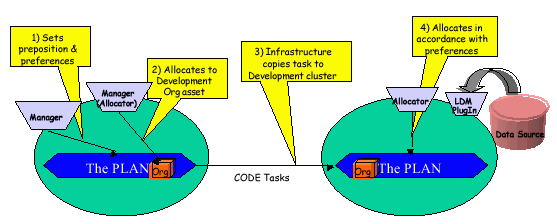

The exercise.tutorial package provides a simple
Workflakes example, for introducing the developer to the most basic features
of the framework.
Such example introduces a part of the concepts governing Workflakes.
It shows how to write simple shell plugins (specifically of the Allocator
kind), their adaptor interfaces, and WDJs to match them and provide the
plugins with logic to process workflow data.
The exercise is based upon Exercise number 6 of the Cougaar
basic tutorial. The Figure below , reproduced
it here from the Cougaar training material, represents pictorially the
content of that exercise. Two clusters collaborate on a simple resource
allocation problem for a workflow.
The {@link psl.workflakes.exercise.tutorial.ManagerPlugIn ManagerPlugIn}
posts a set of tasks onto the blackboard (aka The Plan), and the
{@link psl.workflakes.exercise.tutorial.ManagerAllocatorPlugIn ManagerAllocatorPlugIn}
allocates them to the other cluster, which is intended to represent a different
organization with its own internal logic.

The second plugin receives allocated tasks object in its own segment
of the distributed blackboard and the
{@link psl.workflakes.exercise.tutorial.DevelopmentAllocatorPlugIn}
there matches and assigns them to assets that are published and managed
locally.
In our variant of the exercise, the logic for the Allocator plugins
in both clusters is provided with WDJs that are dispatched by an ad hoc
program (pull modality), that is, {@link psl.workflakes.exercise.tutorial.Exc6WklDispatcher}
.
Those WDJS are - respectively -
{@link psl.workflakes.exercise.tutorial.DevAllocJunction DevAllocJunction}
and
{@link psl.workflakes.exercise.tutorial.MgrAllocJunction MgrAllocJunction}.
How to use the example
To compile the example, simply invoke the build.bat script in the
main directory of the example package.
The following instructions for running the example discuss how to run
the two clusters in the same node:
-
invoke run.bat Exc6Node
-
when both clusters, Management and Development, are completely
loaded, invoke in a different command window DispatcherRun.bat <hostname>
Exc6Node_WVM 9101
-
to visualize and navigate the results of the allocation exercise provided
by the example, start your favorite browser and got to the URL of
the Cougaar PSP
service running within the example. That URL is spelled out as:
http://127.0.0.1:5555/$Development/alpine/demo/TASKS.PSP (or alternatively
http://127.0.0.1:5555/$Management/alpine/demo/TASKS.PSP (for information
on the PSP service in Cougaar refer to the training material).
For running the same example with the two clusters distributed in two different
nodes do the following:
-
invoke run.bat Exc6NodeDev
-
invoke run.bat Exc6NodeMgmt in a different command window
-
in order to ship WDJs to the clusters, you will need to modify {@link psl.workflakes.exercise.tutorial.Exc6WklDispatcher}
to dispatch the two Allocator junctions to the correct destination addresses.
Notice that there is ample space in this example to further expand the
usage of Workflakes techniques.
For instance, we encourage to experiment with modifying the remaining
plugins in the two clusters into shell plugins, and code appropriate WDJs
and matching adaptors, on the basis of the facilities offered by {@link
psl.workflakes.coolets the coolets package}.